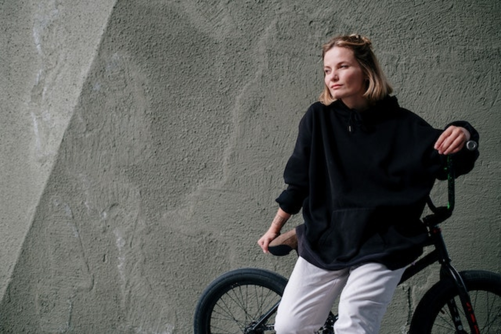
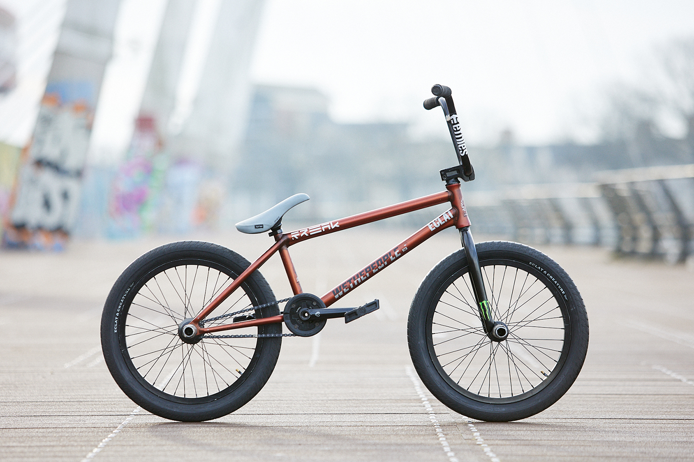

He elaborado este Blog para actualizar y informar de los acontecimientos mas recientes de mi vida
Comenzamos con una introduccion breve sobre con un resumen de los eventos mas recientes ,asi como tambien un vistazo a lo que viene proximo..
Quería cambiar la manera en la que esta distribuida la informacion y crear algo que pudiera a ayudar a mantener un record de los acontecimientos mas importantes y a su vez ilustrar con contenido sobre el dia a dia.
Me vino a la
mente porque por un lado, hay muchos estereotipos en el estilo de vida comun que quisiera romper con este proyecto.